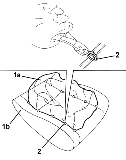

7045D31 FRONT SEAT BACKREST COVER, LEFT OR RIGHT - R.R. WITH SEAT REMOVED
- Path
- Procedures > 70 FITTINGS > 7045 FRONT SEATS > 7045D FRONT SEAT TRIM/PADDING > 7045D31 FRONT SEAT BACKREST COVER, LEFT OR RIGHT - R.R. WITH SEAT REMOVED
- Kind
- repair procedure (removal / refitting; the operation number is the code)
- Applies to
- all engines; all production periods
- Interactive page
- https://sloeber94.github.io/elrnDB/#/939011317
Applies to: all engines; all production periods
 Removing
Removing
 Refitting
RefittingOp. 7045B10 FRONT SEAT HEAD RESTRAINT, LEFT OR RIGHT - R.R.
Op. 7045B06 GUIDE BUSH FOR FRONT SEAT HEAD RESTRAINT (ONE), LEFT OR RIGHT - R.R.
Op. 7045A25 FRONT SEAT BACKREST LUMBAR ADJUSTMENT KNOB (ONE), LEFT OR RIGHT - R.R.
1. Lower the trim and padding (1a) and release the panel of lumbar adjustment knob (1b) from retainers (1c).

Applies to: all engines; all production periods
1. Disconnect the backrest trim links.
2. Release retainers (2a) from retainers (2b) along vertical sections (2c) and (2d).
3. Disconnect retainer (3a) from crossmember (3b).
4. Remove rear pane (4a) by releasing from upper retainers (4b).

Applies to: all engines; all production periods
1. Release retainer (1a) of the upper edge of the backrest trim from metal profile (1b).
2. Press the disconnected edge in the upper part of the seat.
3. Disconnect retainer (3a) by releasing links (3b).
4. Release upper retainer (4a) from frame seat (4b).
5. Disconnect the electrical connection for the backrest heater pad.
Description | Component |
|---|---|
LEFT SEAT HEATER | |
PASSENGER SEAT HEATER |
6. Remove the backrest cover with padding from the seat frame.

Applies to: all engines; all production periods
1. Prise up the trim (1a) by releasing from the padding edge (1b).
2. Use cutters to cut all the front backrest trim retainers.
3. Separate the trim (1a) from padding (1b).

Applies to: all engines; all production periods
Refitting
Removing- Check that the backrest trim is not damaged.
- Observe the following precautions.
- Check that the identification make of the Air Bag backrest cover is on the same side as the Side Bag module.
- If a new backrest cover is being fitted, position the labels as described below.
- Remove the removable part of the adhesive label from the new backrest cover. Place a copy of the label (1b) in a special folder containing the vehicle details (model, registration date, chassis number) and the serial number of the old backrest cover. The file should be kept for future checks.
- Fit the detachable part of the original label on the lower part of the seat, where similar labels for the seat and the Side Bag module and the Air Bag wiring can already be found.
- If removed, position the backrest trim on the padding and crimp the retainers using special pliers.
- Prise up the trim around the edge of the padding.
- Fit the seat trim with padding on the seat frame.
- Connect the electrical connection for the backrest heater pad.
- Do up the upper retainer on the frame seat.
- Tension the links and connect to the retainer.
- Position the front edge of the backrest trim in its seat and connect to the metal profile.
- Position the rear panel and do up the upper retainers.
- Connect the retainer to the crossmember.
- Connect the rear panel vertical retainers.
- Connect the backrest trim links.
- Attach the lumbar adjustment knob panel to the retainers.
Op. 7045A25 FRONT SEAT BACKREST LUMBAR ADJUSTMENT KNOB (ONE), LEFT OR RIGHT - R.R.
Op. 7045B06 GUIDE BUSH FOR FRONT SEAT HEAD RESTRAINT (ONE), LEFT OR RIGHT - R.R.
Topics linked from this page (5)
- 7045A25 FRONT SEAT BACKREST LUMBAR ADJUSTMENT KNOB (ONE), LEFT OR RIGHT - R.R.
- 7045B06 GUIDE BUSH FOR FRONT SEAT HEAD RESTRAINT (ONE), LEFT OR RIGHT - R.R.
- 7045B10 FRONT SEAT HEAD RESTRAINT, LEFT OR RIGHT - R.R.
- O040 LEFT SEAT HEATER
- O041 PASSENGER SEAT HEATER
Topics that link to this page (5)
- 7045A86 FRONT SEAT FRAME (ONE), LEFT OR RIGHT, R.R.
- 7045D10 TRIM FOR ONE FRONT SEAT LH OR RH - R.R
- 7045D11 TRIM OF ONE FRONT SEAT LH OR RH RR WITH SEAT REMOVED
- 7045D30 FRONT SEAT BACKREST COVER, LEFT OR RIGHT - R.R.
- 7045M26 L/H OR R/H FRONT SEAT SQUAB HEAT PAD - R+R FOLLOWING ELECTRICAL WIRING CHECK